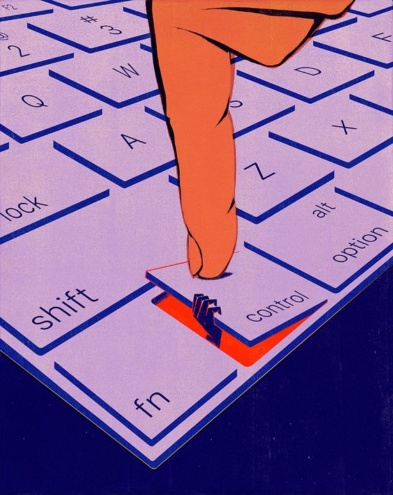
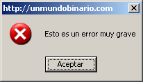
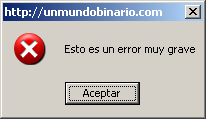

Facultad de Psicología
UNIVERSIDAD DE BUENOS AIRES
Licenciatura en Psicología
Teoría y Técnicas de Grupos - Cátedra I Código: 63
Prof: A designar
- Comisión: 16
- Prof: Maximilano Frydman y Tamara Dmitrow
Alumnes:
- Cunto, Abel
- Luna, Sofía
- Olivera, Camila
- Zabala, Florencia Janis
Surgió en mis pensamientos, como idea-fuerza (xxx) sobre la locura de que a pesar de estar en un mismo lugar, misma computadora, misma taza, mismas manos, mismos lentes, mismo póster de Black Mirror, no era el mismo ser: era alguien en clase, era alguien más en la cita, era un astronauta colorado. Pensé que para responder ese mensaje invitándome a jugar “Among Us” no podía ser le misme: estaba siendo multiplicade por algoritmos. Múltiples agenciamientos (xxx) en alguien: liste para compartir un espacio sensual virtual y encontrarnos allí lo mejor posible con el cuerpo del otre; un simpático muñequito color rojo; un estudiante de Psicología de la UBA. Yo era muches, diferentes más no opuestos.
Ese mensaje me cristalizó, y se hizo rostro, ¿debía responder ahora? Sentía que sí. Pero para perseguir mi deseo de jugar con mis amiges dentro de una hora, debía salir completamente del territorio que habíamos co-creado con Milán. La línea de fuga , como notificación de pantalla fugaz fue suficiente para diversificarme y distribuirme. ¿Es posible estar duro y estar diverso al mismo tiempo?. Y sí, pensé en el pasar del tiempo, que provoca encontrarse sojuzgado por él, acatar sus órdenes para poder hacer en ese día posmoderno (xxx) todo lo que me proponía, bienvenida la abrumante y densa obligación de considerarlo constantemente. Pensé también en que distinto sería si pensaramos el tiempo de otra manera(xxx). Pero basta!! para ser eficaz y hacer de mi tiempo algo útil a los mandatos esperados debo concentrarme en lo importante (xxx)
La clase rutinaria y dictatorial (xxx) termina siempre en el mismo horario, mi intercambio erotico con Milán debía terminar en una hora, para que las siguientes dos horas pueda dedicarlas a jugar con mis amiges, y luego dormir para despertarme al otro día temprano. Estaba siendo perseguide por el reloj, y ese si que es rápido. ¿Cómo hacer que la energía vuelva a fluir?, ¿Cómo librarse de la rostredad (xxx) de las notificaciones?, ¿Cómo volver a conectarme con Milán y su imagen en nuestro escenario de sensualidad?. Era un corte (xxx) que no había sido previsto cuando elegimos la hora de encontrarnos. Como decía Foucault, el tiempo tiene una utilidad, sino no tiene sentido económicamente hablando. Y el sexo, es económico (xxx)
Pero mientras el tiempo pasa no puedo evitar esta sensación abrasante de calor virtual que nos invade ahora, de sentirnos fritados por un microondas. Al decir de Gergen (1992) relaciones intensas, tan rápidas como la mejor banda ancha y tan cortas como un monoambiente-prisión-disciplinario en el que Foucault (1987) no tardaría en advertir, entre voluntariamente, es más, ahorre para eso. El nuevo panóptico es una microlente, que apunta a mi frente. Posiblemente está cargada de coerciones.
En este territorio, forzado por un virus, donde estamos distribuides y multiplicades, paradojalmente me encuentro y nos encontramos más encerrades que nunca e insertos en un ciclo sin fin de mandamientos implícitos. Encerrades en una idea de espacio, una clausura virtual del ¿dónde estoy?.
Como decía Foucault, cada espacio tiene su motivo de ser. Ser útil, sus reglamentos y su mejor forma de hacer uso del espacio y funcionar así, para ser eficaces. Es por eso que queda fuera de pantalla-lugar que en mitad de mi clase, deje escapar una mueca desorbitante que puede develar mi resistencia (xxx) frente al panóptico, o que al leer un mensaje de Milán brote de mi un suspiro rebelde, el que me advierte de fijarme si el micrófono está encendido. (xxx)
Vuelvo al ser-estudiante. Me reincorporo, acomodo mi mirada, mi cara de interés, ¿Engaño a alguien? ¿Los demás estarán sin-estar en esta clase como yo?
Tantos roles actuados en un mismo momento, pocas veces me había sentido así antes de la pandemia.
Si este monoambiente adoctrinador es mi gran microondas personalizado, que compre con mi esfuerzo de humano moderno tardío, al igual que esta laptop desde la que escribo, soy entonces un refrito de la peor secuela de una comedia romántica sin final feliz. Tragade/Absorbide por el progreso en forma de virus ( ¿informático?). Si Cortazar no se enoja cabeza tomada (cortazar, cuento corto, casa tomada)
Ya no soy dueñe de mi propio yo, pues tengo facebook, twitter, instagram, y he mandado tantas fotos que seguro una parte de mi está distribuida en muchos de esos celulares. Debo responder a esos perfiles, que también son yo. Es decir, tengo una obligación conmigo misme de relacionar tal cual ese perfil fuera un otre real. Pero si Bruner (1991) tenía razón y mi yo es la red constituída entre otres, o se entrama en ella, que yo forma mi yo triturado si no hay cuerpos. ¿Soy datos?, ¿Soy audio y video? ¿Pixeles? Soy mi propia “conserva cultural” virtual (moreno, 1998) , Conserva posiblemente agenciada según que sistema operativo guie mi psicosis
¿Soy según qué plataformas de despedazamiento subjetivo sepa usar o sepan usarme? (xxx) O soy lo que elijo mostrar y como lo muestro? Así como decía Castoriadis, el imaginario social crea la subjetividad y la sociedad es creada gracias a las subjetividades. Podría ser que mi yo es creado por las redes y yo las creo a ellas? Puede ser una pc un magma de chips agenciados por constantes actualizaciones de software tiranas?
Bibliografía:
- - Gergen, K. J. (1992). El yo saturado. Barcelona: Paidós.Caps. 1, 2, 3 y 9.
- - Bruner, J. (1991). La autobiografıá del yo (Capı́tulo 4). En Actos de significado. Madrid: Alianza.
- - Castoriadis, C. (1998). Lo imaginario: la creación en el dominio socio-histórico En C. Castoriadis. Los dominios del Hombre. Encrucijadas del laberinto. Barcelona: Gedisa.
- - Foucault, M.: Vigilar y castigar, México, Siglo XXI, 1987; Cap. 3. "Las disciplinas” CAP Los cuerpos dóciles.
- - Deleuze, G. yGuattari, F. (1988). Rizoma. EnG. Deleuze y F. Guattari. Mil Mesetas (Cap.1). Valencia: Pre-Textos.
 
